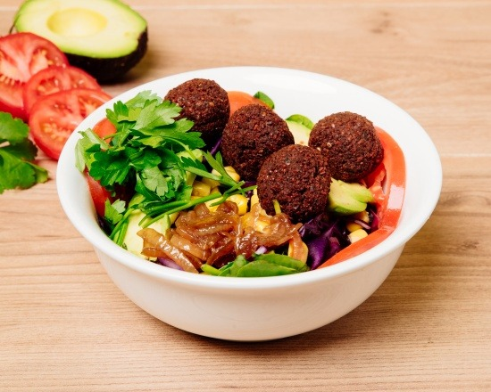
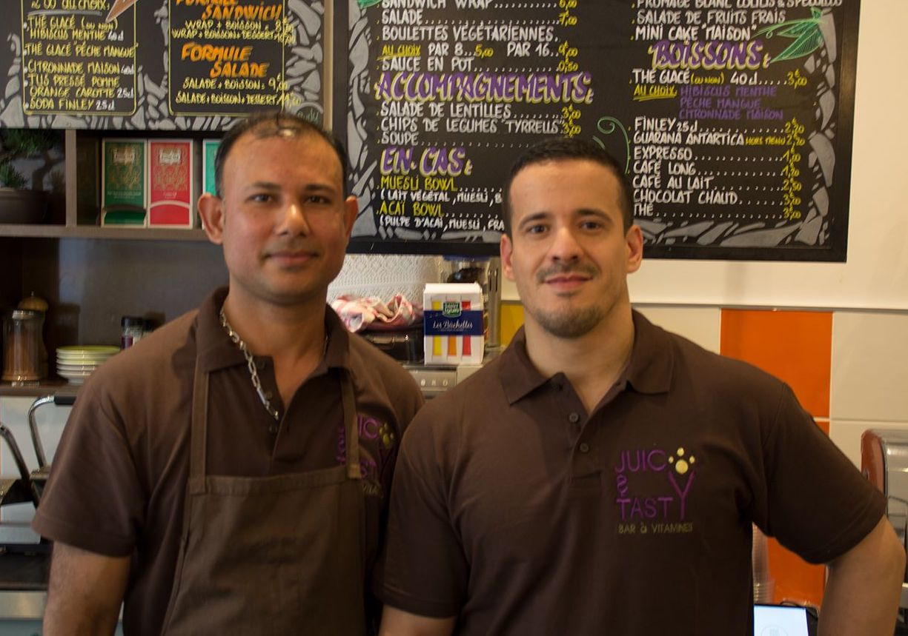

Unexpected beginnings ...
It all starts in September 2015 with Berkane Mamoun, founder of Juicy & Tasty. The restaurant is then much more common than today, specializing in baggles made from meat and fish. It lasts until September 2016, the moment of awareness of the founder: on the side of health and ethics, he can no longer continue to eat meat. And so more to prepare meat-based dishes either, his craft naturally requiring to be in harmony with his convictions. His vegetarianism extends until Juicy & Tasty to change concept quickly, just like his own diet.
Berkane Mamoun
A turning 90 degrees!
Berkane Mamoun begins various research on the subject, restoration otherwise, and is interested in the falafels that he appreciates very much. However, he fears lassitude if he is confined to it and thus creates a concept still central to the restaurant today: the veggie balls, to the number of four varieties. The rest of the proposed plans will follow naturally.
Les veggie balls
A simple and effective philosophy
The project of Juicy & Tasty, the philosophy around which it was built is then simple: offer good products, innovative, while retaining affordable prices. Nothing more, nothing less. And today, it can be said that it is a successful mission! The restaurant constantly welcomes customers as familiar with the vegetarian or vegan diet as mere curious for a pleasant meal. Meal tasted in a warm and bright atmosphere, in keeping with positive beliefs that the caring team shares with everyone!
L'équipe
